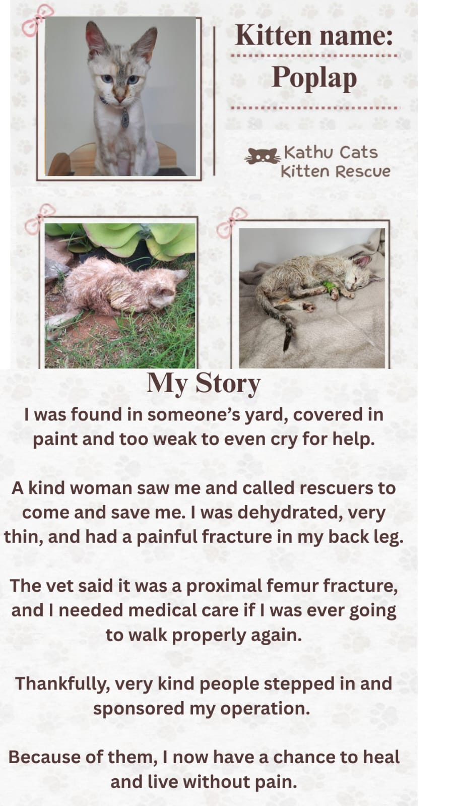
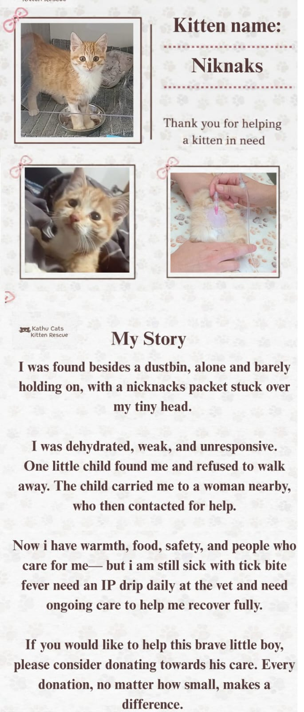

The difference made, honestly accounted for
These numbers represent real animals, real interventions, and real costs. We present them plainly — no exaggeration, no spin.
What four years of work looks like
Figures below reflect four years of continuous work. Where it helps clarity, they are shown as annual ranges rather than totals.
Some of the animals behind the numbers


What sustained effort produces
The effects of consistent sterilisation and rescue work are not always visible in the short term, but they compound. Neighbourhoods where we have focused sterilisation efforts show measurably fewer new kittens appearing each season. Residents who were previously overwhelmed by stray cats report the situation stabilising.
Beyond the direct animal welfare impact, the work changes community behaviour incrementally. People who engage with us — as adopters, donors, or even just observers — tend to think differently about the cats they encounter. That cultural shift is slow, but it is real.
We are not going to overstate this. The problem in Kathu is not solved. There are still more cats suffering than we can help, more sterilisations needed than we can fund, and more calls for assistance than we can always respond to. But the direction is right, and the work is making a difference.

"We used to have dozens of stray kittens appearing every spring. Since the sterilisation programme started in our street, we've seen a real difference. It's not zero — but it's better."
— Kathu resident
The work is ongoing. The demand always exceeds our resources.
We are not going to present a picture of a problem that is under control. It is not. For every cat we rescue, sterilise, or rehome, there are others we cannot reach in time, cannot afford to treat, or cannot find placements for. The incoming caseload does not slow down because our resources are stretched, even after four years of work.
Sterilisation reduces the long-term scale of the problem, but the existing population — all the already-alive, already-suffering cats — still needs care right now. That means ongoing costs that do not go away: food, vet visits, emergency interventions, transport, and the time of volunteers who are not paid for any of it.
We share this not to create despair, but because donors and supporters deserve an honest picture. The impact is real. It is also incomplete, underfunded, and reliant on a small number of people doing far more than is sustainable. More help — in whatever form — directly translates to more animals helped.